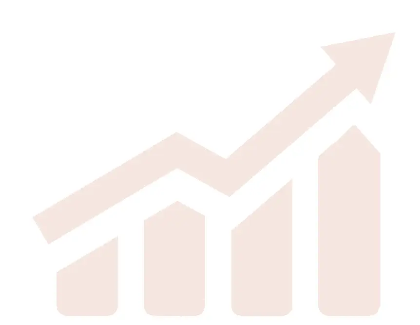

細心照護，陪伴每個重要時刻。
Start From Your Needs
從需求開始，快速找到適合的醫療服務與醫師資訊。
＊僅供參考，實際診療請依醫師門診評估為準
Our Specialties
整合婦科、產科與生殖醫學專業，提供從預防、診斷到治療的完整婦女健康服務。
發展腹腔鏡、子宮腔鏡等微創手術，並提供海扶刀等治療選擇。

結合病理、影像、血液腫瘤及外科等專業團隊，提供婦癌診斷與整合治療。
針對尿失禁、骨盆腔器官脫垂等問題，提供完整檢查與治療。

提供產前檢查、產前診斷、遺傳諮詢及高危險妊娠照護。
提供不孕症評估、人工生殖、試管嬰兒、顯微受孕及生育保存等醫療服務。

從孕期、生產到產後，提供母親與新生兒連續性的醫療與衛教照護。
Physician Team
由婦科、產科及生殖醫學專業醫師組成，給予您最貼心、最具專業的醫療與照護。
｜專長主治｜
{{ d.expertise }}
｜現職｜
{{ d.title }}

Health Education
從疾病認識、孕期照護到日常保健，提供實用且專業的健康教育與指引。
{{ a.desc }}

Keep Moving Forward
以品質、研究與團隊合作，持續精進婦女健康照護。
婦科曾獲 SNQ 國家品質標章肯定，持續發展婦女泌尿與骨盆健康照護。
結合高雄醫學大學與醫學中心臨床資源，持續投入臨床研究、醫學教育與人才培育。
整合院內多專科醫療資源，從婦癌、高危險妊娠到女性健康，提供跨團隊照護。
曾經在本院就診或住院嗎？歡迎您花 1 分鐘分享您的體驗，幫助我們持續改善醫療服務。
您可以先依專長尋找醫師，或直接查詢近期門診時間，線上預約掛號更方便。
CONTACT
婦產部門診｜07-312-1101 分機 7810–7813
門診衛教室｜分機 7818
生殖醫學中心｜分機 7805